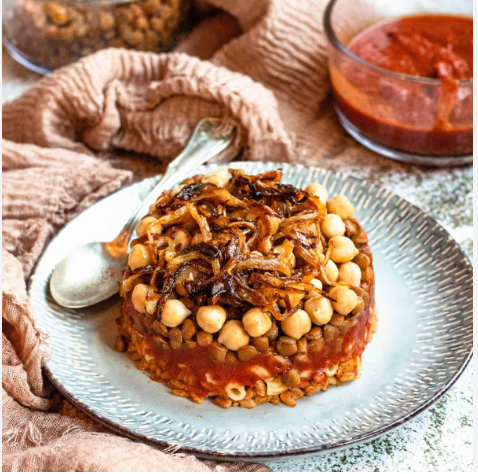

Famous Dishes
Egyptian cuisine is delicious and full of flavor. Here are some of the most loved dishes:
- Koshari — Egypt’s national dish made with rice, lentils, pasta, and spicy tomato sauce.
- Ful Medames — Cooked fava beans served with olive oil and lemon juice.
- Taameya — Egyptian-style falafel made from fava beans.
